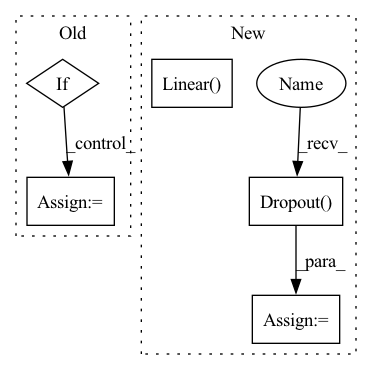

Pattern ID :9770

Before Change
if args.use_input_features:
first_linear_dim += args.features_dim
if args.moe:
model = MOE(args)
else:
if args.features_only or args.more_ffn_capacity:
ffn = [
nn.Dropout(args.ffn_input_dropout),
nn.Linear(first_linear_dim, args.ffn_hidden_dim),
nn.ReLU(),
nn.Dropout(args.ffn_dropout),
nn.Linear(args.ffn_hidden_dim, args.ffn_hidden_dim),
nn.ReLU(),
nn.Dropout(args.ffn_dropout),
nn.Linear(args.ffn_hidden_dim, args.ffn_hidden_dim),
nn.ReLU(),
nn.Dropout(args.ffn_dropout),
nn.Linear(args.ffn_hidden_dim, output_size)
]
else:
ffn = [
nn.Linear(first_linear_dim, args.hidden_size),
nn.ReLU(),
nn.Linear(args.hidden_size, output_size)
After Change
nn.Linear(first_linear_dim, output_size)
]
else:
ffn = [
nn.Dropout(args.ffn_input_dropout),
nn.Linear(first_linear_dim, args.ffn_hidden_dim)
]
for _ in range(args.ffn_num_layers - 2):
ffn.extend([
get_activation_function(args.activation),
nn.Dropout(args.ffn_dropout),
nn.Linear(args.ffn_hidden_dim, args.ffn_hidden_dim),
])
ffn.extend([
get_activation_function(args.activation),
In pattern: SUPERPATTERN
Frequency: 3
Non-data size: 5
Instances
Fragment ID: 35116535
Project Name: aamini/chemprop
Commit Name: c2a68dc5b795bc2858840f51addd6012373ab5d8
Time: 2018-10-29
Author: swansonk.14@gmail.com
File Name: model.py
M Class Name: AnonimousClass
N Class Name: AnonimousClass
M Method Name: build_model(1)
N Method Name: build_model(1)
M Parent Class:
N Parent Class:
M File Name: model.py
N File Name: model.py
M Start Line: 51
M End Line: 94
N Start Line: 44
N End Line: 93
'>
Before Change
def __init__(self, fname, gpu):
self.gpu = gpu
self.model = PretrainedDeCoAR2Model(fname).cuda(gpu)
if self.gpu is not None:
self.model = self.model.cuda(gpu)
def __call__(self, x):
x = torch.from_numpy(x).float()
After Change
for arg_name, arg_val in args.items():
setattr(config, arg_name, arg_val)
self.post_extract_proj = nn.Linear(config.input_feat, config.encoder_embed_dim)
self.dropout_input = nn.Dropout(config.dropout_input)
self.encoder = TransformerEncoder(config)
def forward(self, features, padding_mask=None):
features = self.post_extract_proj(features)
'>
Fragment ID: 35116545
Project Name: awslabs/speech-representations
Commit Name: 33419e6629432e01652d28f457cbbc58f007c012
Time: 2021-06-17
Author: shaosl@38f9d361834b.ant.amazon.com
File Name: src/speech_reps/models/decoar2.py
M Class Name: DeCoAR2
N Class Name: DeCoAR2
M Method Name: __init__(1)
N Method Name: __init__(3)
M Parent Class: nn.Module
N Parent Class:
M File Name: src/speech_reps/models/decoar2.py
N File Name: src/speech_reps/models/decoar2.py
M Start Line: 44
M End Line: 50
N Start Line: 29
N End Line: 44
'>
Before Change
def __init__(self, backbone, num_classes, use_bottleneck=True, bottleneck_dim=1024, head_bottleneck_dim=1024):
super(Classifier, self).__init__()
self.backbone = backbone
if use_bottleneck:
self.bottleneck = nn.Sequential(
nn.Linear(backbone.out_features, bottleneck_dim),
nn.BatchNorm1d(bottleneck_dim),
nn.ReLU(),
nn.Dropout(0.5)
)
self.bottleneck[0].weight.data.normal_(0, 0.005)
self.bottleneck[0].bias.data.fill_(0.1)
in_features = bottleneck_dim
else:
self.bottleneck = nn.Identity()
in_features = backbone.out_features
After Change
nn.Linear(bottleneck_dim, width),
nn.ReLU(),
nn.Dropout(0.5),
nn.Linear(width, num_classes)
)
// The adversarial classifier head
self.adv_head = nn.Sequential(
nn.Linear(bottleneck_dim, width),
nn.ReLU(),
nn.Dropout(0.5),
nn.Linear(width, num_classes)
)
for dep in range(2):
'>
Fragment ID: 35116540
Project Name: thuml/transfer-learning-library
Commit Name: 6715ce965493b31f0defccaf6c0b1a654ffd4a0a
Time: 2020-03-11
Author: JiangJunguang1123@outlook.com
File Name: dalib/adaptation/mdd.py
M Class Name: Classifier
N Class Name: Classifier
M Method Name: __init__(5)
N Method Name: __init__(6)
M Parent Class: nn.Module
N Parent Class: nn.Module
M File Name: dalib/adaptation/mdd.py
N File Name: dalib/adaptation/mdd.py
M Start Line: 130
M End Line: 148
N Start Line: 81
N End Line: 113